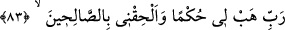

görüleceği gün beni, ana-babamı ve mü’minleri bağışla.” (İbrâhim, 14/41).
Âişe (r.anhâ)’dan rivâyet edildiğine göre şöyle demiştir: “Yâ Rasûlallah! İbn Cüd’ân
Câhiliyye döneminde sıla-i rahim yapar ve miskini doyururdu. Bu, ona fayda verir mi?”
dedim. Rasûlullah (s.a.): “Hayır, o, bir gün olsun “Rabbim, kıyamet gününde
günahımı affet” dememiştir.” buyurdu.[12] Yani o kâfir idi. Kıyamet gününü ikrar ve
tasdik etmemişti. Çünkü hesab gününe inanan günahının mağfîretini taleb eder. İşte bu
yüzden İbn Cüd’ân’ın yaptığı iyilikler, âhirette ona fayda vermez.
Abdullah b. Cüd’ân, Âişe (r.anha)’nın (dedesi cihetinden) amcası oğludur. Önceleri
fakirdi. Sonra bir hazine elde etti ve onun sayesinde zengin oldu. Bu hazineden infâk
eder, iyilik ve hayırlar yapardı.
Yukarıdaki âyetlerde İbrâhim (a.s.)’ın söylediklerinin hepsi onun kavmine karşı ileri
sürdüğü delillerdi. Bunları yapmaya gücü olmayanın ilâh olmaya elverişli olmadığını
kavmine haber vermekten ibâretti.
İbrâhim (a.s.), ilk yaradılışından tekrar diriltilişine (ba’s) kadar Allah Teâlâ’nın
kendisine bahşettiği çeşiti lütufları saydıktan sonra, bu durum onu eldeki bu nimetleri
tutmak ve daha da fazlasını celb etmek için Allah Teâlâ’ya münâcâta ve duâya sevketti.
Bunun üzerine şöyle duâ etti:
83. Rabbim! Bana hikmet ver ve beni iyiler, sâlihler arasına kat.
“Rabbim! Bana hikmet” ilim ve amelde kemâl “ver” ki onunla Hakk’ın hilâfetine ve
halkın riyâsetine/önderliğine istîdad kazanayım. Çünkü bir şeyi bilip onun gereği ile
amel etmeyene ‘hakîm’, böyle kimsenin ilmine de ‘hüküm ve hikmet’ denmez.
“beni iyiler, sâlihler arasına kat.” Beni salâhta/iyilikte yer eden, günahların
büyüğünden ve küçüğünden uzak duran kâmiller zümresine dâhil edecek ilim, amel ve
ahlâkta muvaffak kıl. Yahutta beni ve onları cennette bir araya getir. Nitekim Allah
Teâlâ İbrâhim (a.s.)’ın bu duâsına icâbet ederek “O, âhirette de sâlihlerdendir.” (el-
Bakara, 2/130; en-Nahl, 16/122; el-Ankebût, 29/27) buyurmuştur. Bu konu ile
söylenecek başka sözler Yûsuf sûresinin sonlarında geçti.
84. Bana, sonra gelecekler içinde, iyilikle anılmak nasip eyle!